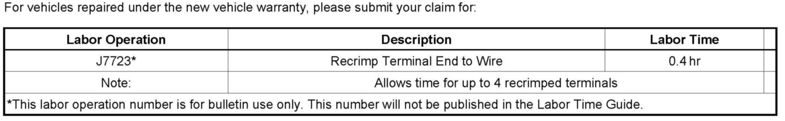
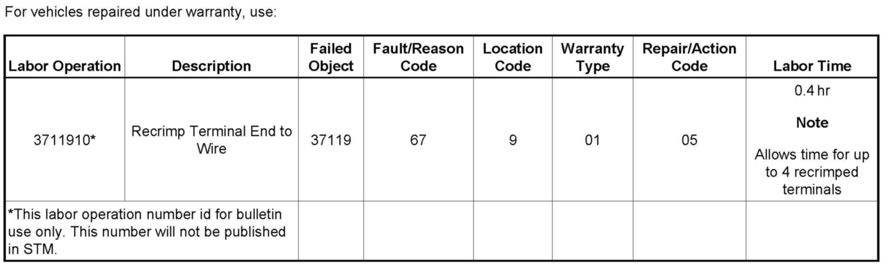

Electrical - Reducing Intermittent Electrical Concerns
INFORMATIONBulletin No.: 08-06-03-009A
Date: October 29, 2008
Subject:
Reducing Electrical Intermittents - Recrimping Electrical Connectors and Inspection of Related Wiring Harness Connections When Diagnosing Miscellaneous DTCs, Intermittent Driveability Concerns, Hard Start, No Start, Incorrect Gauges, Inoperative I/C Systems, ECM, TCM, SES/4WD Lamps Illuminated
Models:
2005-2009 GM Passenger Cars and Light Duty Trucks (including Saturn)
2003-2009 HUMMER H2
2006-2009 HUMMER H3
2005-2009 Saab 9-7X
Attention:
In some circuits where modules compare electrical values to determine proper operation or functioning, resistance differences as small as "milli-ohms" between wires may cause Diagnostic Trouble Codes (DTCs) to set. It is not possible to judge the electrical resistance of a crimped connection down to these fine values with a common Volt/Ohm Meter (VOM). If an intermittent DTC is being set (especially in an EBTCM, TPS, or ECM circuit) you should recrimp the terminals to the wires on both ends of the suspected harness before assuming the affected module is at fault.
Supercede:
This bulletin is being revised to add additional information and to provide a dedicated Labor Operation for Recrimping Electrical Terminals. Please discard Corporate Bulletin Number 08-06-03-009 (Section 06 - Engine/Propulsion System).
Electrical Intermittents / Recrimping Terminals
Electrical Intermittents can be a source of frustration for technicians and extended downtime for vehicles. Some circuits in vehicles are not only susceptible to an intermittent connection, but high resistance may also cause erratic operation or DTCs. An often overlooked possibility in the diagnostics of intermittents is the quality of the terminal crimps.
Note:
In some circuits where modules compare electrical values to determine proper operation or function, resistance differences as small as "milli-ohms" may cause Diagnostic Trouble Codes (DTCs) to set. It is not possible to judge the electrical resistance of a crimped connection down to these fine values with a common Volt/Ohm Meter (VOM). If an intermittent DTC is being set (especially in an EBTCM, TPS, or ECM circuit), you should recrimp the terminals to the wires on both ends of the suspected harness before assuming the affected module is at fault.
Diagnostic Methodology
When servicing a vehicle for any type of electrical concern, the following steps are imperative. Inspect and ensure the integrity of all related wiring harness connectors. If the wiring harness connectors are not properly constructed or engaged before they are locked together, numerous types of intermittent conditions can occur, which may include any of the symptoms listed in the Subject title above and possibly others.
1. Once you have isolated the circuit that connects the components in question, perform a visual and physical inspection of the wiring harness connectors for integrity. Many times, the vehicle may be repaired just by disconnecting and reconnecting the connectors. As with all repairs to wiring harness connectors and terminals, a pull test of the terminals within the connector should be performed. A pull test is performed by inserting the proper size terminal test tool (not a paper clip) into the terminal to determine whether or not the terminal is making good contact, or whether the terminal has been damaged from the prior improper connection or lack of connection.
Notice:
Most terminals used in current module connectors (ECM, BCM, EBTCM and the like) are small 0.64 mm sq. terminals and can be damaged by probing with the wrong tool. The J 35616-64B probe has been designed for these terminals that may be either a round or square design.
Important:
It is suggested that all prior J-35616-64 test probes prior to version B be discarded.
2. In many instances once the electrical integrity of a harness is verified, most technicians will question the associated module or component. While this may seem to be a reasonable assumption, it is possible for a harness that tests as electrically conductive to be the source of an intermittent concern.
Important:
The suspect electrical harness should have the terminal pins re-crimped before replacing a module or component that test as "OK."
3. The correct crimping tool is required in order to consistently provide secure electrical connections. Please use crimping tool J-3812564 for the Delphi style .64 connectors. The crimping dies are identified with letters numbers or colors on each tool. Always refer to the reference guide to determine which die(s) to use for a given terminal.
Important:
Always refer to the reference guide to determine which die(s) to use for a given terminal.

Warranty Information (excluding Saab U.S. Models)

Warranty Information (Saab U.S. Models)

Disclaimer